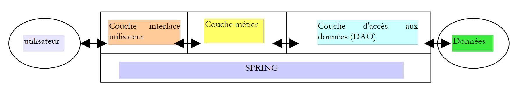
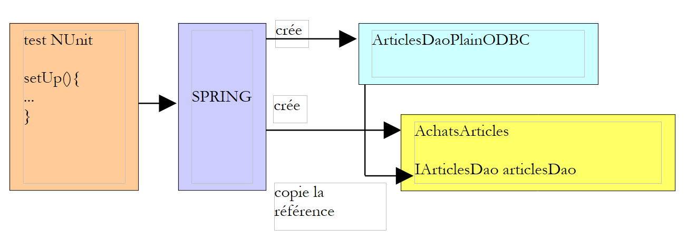

4. 依赖注入
依赖注入可以被视为控制反转的必然结果。我们将通过一个新示例来说明这一点。请看以下这个三层Web应用程序：
 |
我们假设对DAO层的访问由前面讨论过的[IArticlesDao]接口控制，且整个应用程序是一个基于Web的购物应用程序。商品由[Dao]层管理。我们假设对业务层的访问由以下接口控制：
Public Interface IArticlesDomain
Public Interface IArticlesDomain
' buy a basket of items
Sub acheter(ByVal panier As Panier)
' get the list of articles
Function getAllArticles() As IList
' get a specific item
Function getArticleById(ByVal idArticle As Integer) As Article
' to record errors
ReadOnly Property erreurs() As ArrayList
End Interface
我们不会过多探讨各种方法的含义。我们只需指出，[getAllArticles] 方法（其作用是检索所有待售商品的列表）需要访问数据。为了获取数据，它必须调用 [IArticlesDao] 接口。实现 [IArticlesDomain] 接口的类的主体结构可能如下所示：
Imports istia.st.articles.dao
...
Namespace istia.st.articles.domain
Public Class AchatsArticles
Implements IArticlesDomain
'private fields
Private _articlesDao As IArticlesDao
Private _erreurs As ArrayList
' manufacturer
Public Sub New(ByVal articlesDao As IArticlesDao)
_articlesDao = articlesDao
End Sub
...
End Class
End Namespace
如前所述，业务层接口的某些方法需要向 [Dao] 层请求数据。因此，我们实现 [IArticlesDomain] 接口的 [AchatsArticles] 类需要一个指向 [IArticlesDao] 接口实现类的引用。上文中的私有字段 [_articlesDao] 即充当此引用。该引用是在构造 [AchatsArticles] 对象时提供的。
假设 [ItemPurchases] 类已经编写完成，我们希望使用 [Nunit] 测试对其进行测试。让我们构建此测试，使其使用 Spring 配置文件：
...
Imports Spring.Objects.Factory.Xml
Imports System.IO
...
<TestFixture()> _
Public Class NunitSpringTestArticlesDomain
' the test object
Private articlesDomain As IArticlesDomain
<SetUp()> _
Public Sub init()
' retrieve an instance of the Spring object manufacturer
Dim factory As XmlObjectFactory = New XmlObjectFactory(New FileStream("spring-config-domain.xml", FileMode.Open))
' request instantiation of the articles dao object
articlesDomain = CType(factory.GetObject("articlesdomain"), IArticlesDao)
End Sub
...
End Class
Spring 的配置文件 [spring-config-domain.xml] 内容会是什么？可能如下所示：
<?xml version="1.0" encoding="iso-8859-1" ?>
<!DOCTYPE objects PUBLIC "-//SPRING//DTD OBJECT//EN"
"http://www.springframework.net/dtd/spring-objects.dtd">
<objects>
<description>Gestion d'une table d'articles</description>
<!-- the IArticlesDao interface implementation class -->
<object id="articlesdao" type="istia.st.articles.dao.ArticlesDaoPlainODBC, articlesdao">
<constructor-arg index="0">
<value>odbc-firebird-articles</value>
</constructor-arg>
<constructor-arg index="1">
<value>SYSDBA</value>
</constructor-arg>
<constructor-arg index="2">
<value>masterkey</value>
</constructor-arg>
</object>
<!-- the IArticlesDomain interface implementation class -->
<object id="articlesdomain" type="istia.st.articles.domain.AchatsArticles, articlesdomain">
<constructor-arg index="0">
<ref object="articlesdao" />
</constructor-arg>
</object>
</objects>
此文件此前已用于从 [Dao] 层实例化 [IArticlesDao] 单例，现在我们在此基础上添加了从业务层实例化 [IArticlesDomain] 单例的代码。这将如何构建？
- 外部代码通过配置文件向 Spring 请求名为“articlesdomain”的单例引用。我们的测试类中的 [init] 方法就是如此：
<SetUp()> _
Public Sub init()
' retrieve an instance of the Spring object manufacturer
Dim factory As XmlObjectFactory = New XmlObjectFactory(New FileStream("spring-config-domain.xml", FileMode.Open))
' request instantiation of the articles dao object
articlesDomain = CType(factory.GetObject("articlesdomain"), IArticlesDao)
End Sub
- Spring 在其配置文件中查找该单例的定义。它发现要实例化该单例，需要另一个名为“articlesdao”的单例：
<object name="articlesdomain" class="istia.st.articles.domain.AchatsArticles, articlesdomain">
<constructor-arg index="0">
<ref object="articlesdao" />
</constructor-arg>
</object>
- 随后，Spring 将实例化“articlesdao”单例。我们之前已经解释过它是如何实现的。
- 完成此操作后，它便可以实例化“articlesdomain”单例，并将对其的引用返回给请求它的代码。
该机制可通过以下图示进行说明：
 |
我们可以看到，Spring 已管理了“articlesdomain”单例对“articlesdao”单例的依赖关系。要以这种方式使用 Spring，我们需要构建一个带有构造函数的类，该构造函数将依赖的单例作为参数：
Imports istia.st.articles.dao
...
Namespace istia.st.articles.domain
Public Class AchatsArticles
Implements IArticlesDomain
'private fields
Private _articlesDao As IArticlesDao
' manufacturer
Public Sub New(ByVal articlesDao As IArticlesDao)
_articlesDao = articlesDao
End Sub
...
End Class
End Namespace
“依赖注入”这一术语涵盖了以下两方面：
- 基于依赖关系来构造待实例化类的具体方式
- Spring 在实例化这些类时管理这些依赖关系的方式